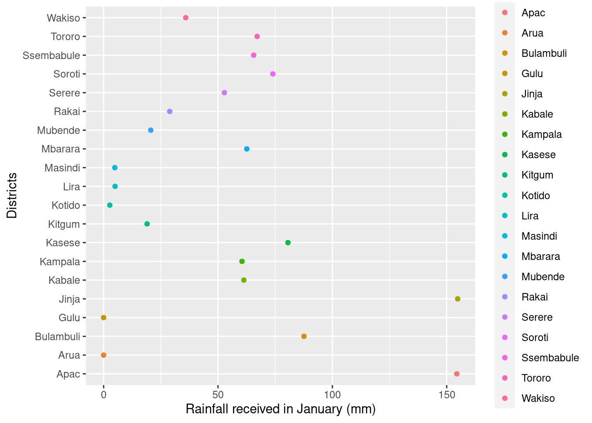
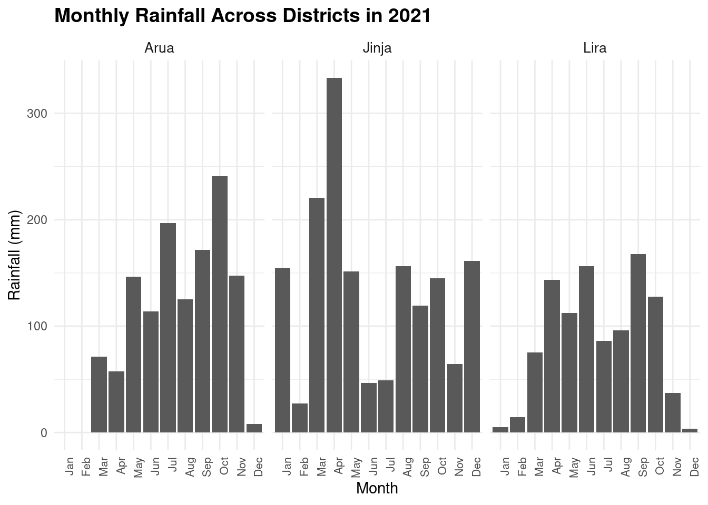

Code
# Importing the selected data frame
library(readxl)
Monthly_rainfall_for_selected_centres_in_mm_2021 <- read_excel("/cloud/project/data/raw/Monthly_rainfall_for_selected_centres_in_mm_2021.xlsx",
range = "B3:N23")Haron Otim ![]()
Project Description
This project endeavors to investigate and comprehend the dynamic patterns of rainfall distribution across different districts in Uganda for the year 2021. The central objective is to employ advanced data analysis techniques and time series modeling to reveal trends, variations, and potential influencing factors affecting rainfall patterns.
Objectives:
Analyze and visually represent historical trends in rainfall across various districts in Uganda for the year 2021.
Identify and quantify disparities in rainfall patterns between districts.
Explore the correlation between rainfall patterns and additional socio-economic, environmental, and infrastructural variables.
Derive actionable insights for policymakers, urban planners, and researchers to guide sustainable development strategies.
The data for this study was acquired from the Uganda Beaureau of Statistics, specifically focusing on climate data for rainfall amounts received by selected districts in 2021.
It is important to note that the analysis conducted serves an academic purpose only.
Understanding the nuances of rainfall distribution in different districts of Uganda is crucial for informed decision-making and sustainable development. This analysis, focused on distinct districts, aims to provide valuable insights into local precipitation patterns, environmental trends, and the impact of various factors on rainfall distribution. The outcomes of this study can guide policy interventions, infrastructure planning, and strategic decision-making to ensure balanced regional growth and address environmental challenges.
The project employs statistical analysis, time series modeling, and data visualization techniques using the R programming language. This comprehensive approach integrates data from various sources, offering a holistic view of the factors influencing rainfall patterns in Uganda. The results aim to facilitate evidence-based decision-making for policymakers, researchers, and stakeholders involved in the sustainable development of the region.
# Importing the selected data frame
library(readxl)
Monthly_rainfall_for_selected_centres_in_mm_2021 <- read_excel("/cloud/project/data/raw/Monthly_rainfall_for_selected_centres_in_mm_2021.xlsx",
range = "B3:N23")The district of Wakiso was mistakenly registered twice in the raw data. For the purpose of a more representative analysis, one of the obersvations was located to Apac District, my home District.
Monthly_rainfall_for_selected_centres_in_mm_2021 <- Monthly_rainfall_for_selected_centres_in_mm_2021 |>
mutate(District = case_when(
Jan == 154.4 ~ "Apac",
.default = District
))For easier analysis of this dataset, the data was pivoted with a new variable months.
monthly_rainfall <- Monthly_rainfall_for_selected_centres_in_mm_2021 |>
pivot_longer(cols = Jan:Dec,
names_to = "months",
values_to = "rainfall_in_mm")Monthly rainfall for selected districts of Lira, Arua and Jinja.
# monthly rainfall extracted for Arua, Lira and Jinja districts
monthly_rainfall_arua_lira_and_Jinja <- monthly_rainfall |>
filter(District %in% c("Arua", "Lira", "Jinja"))Figure 1 is a scatter diagram showing the rainfall amounts received by different districts in the month of january 2021 in Uganda.
ggplot(data = Monthly_rainfall_for_selected_centres_in_mm_2021,
mapping = aes(x = Jan,
y = District,
color = District)) +
geom_point() +
labs(x = "Rainfall received in January (mm)", y = "Districts")
Time Series Plots:
Bar Charts:
Heatmaps:
Box Plots:
Scatter Plots:
Pie Charts:
Geospatial Maps:
Line Charts:
Area Charts:
Radar Charts:
Spatial and Temporal Patterns:
Identification and description of spatial and temporal patterns in rainfall distribution across districts.
ggplot(data = monthly_rainfall,
aes(x = months,
y = rainfall_in_mm)) +
geom_col() +
facet_wrap(~District, ncol = 4) +
labs(title = "Monthly Rainfall Across Districts in 2021",
x = "Month",
y = "Rainfall (mm)") +
theme_minimal() +
theme(axis.text.x = element_text(size = 8, angle = 90, hjust = 1),
strip.text = element_text(size = 10),
strip.background = element_blank(),
plot.title = element_text(size = 14, face = "bold"))
Total Annual Rainfall:
The Table 1 below shows total annual rainfall amounts for each district, providing an overview of regional variations.
total_annual_rainfall <- monthly_rainfall |>
group_by(District) |>
summarize(total_annual_rainfall = sum(rainfall_in_mm))
total_annual_rainfall|>
gt() |>
fmt_number(columns = c(total_annual_rainfall),
decimals = 1)| District | total_annual_rainfall |
|---|---|
| Apac | 1,369.9 |
| Arua | 1,279.0 |
| Bulambuli | 1,911.0 |
| Gulu | 1,678.8 |
| Jinja | 1,628.9 |
| Kabale | 953.3 |
| Kampala | 1,674.8 |
| Kasese | 918.3 |
| Kitgum | 1,361.2 |
| Kotido | 822.6 |
| Lira | 1,024.7 |
| Masindi | 1,076.6 |
| Mbarara | 933.2 |
| Mubende | 1,028.0 |
| Rakai | 1,202.7 |
| Serere | 1,119.9 |
| Soroti | 1,060.3 |
| Ssembabule | 948.1 |
| Tororo | 1,538.0 |
| Wakiso | 1,399.0 |
Monthly Rainfall Variations:
The Table 2 below shows analysis of monthly variations in rainfall, identifying peak months and dry periods in the districts of Arua, Lira and Jinja as case studies.
# Define the thresholds for high, medium, and low rainfall rates
high_threshold <- 150 # mm/h
medium_threshold <- 50 # mm/h
# Categorize the rainfall values
monthly_rainfall_category <- monthly_rainfall_arua_lira_and_Jinja |>
mutate(rainfall_cat = case_when(
rainfall_in_mm > high_threshold ~ "high",
rainfall_in_mm > medium_threshold ~ "medium",
TRUE ~ "low"
))
monthly_rainfall_category |>
pivot_wider(names_from = months,
values_from = rainfall_in_mm) |>
gt() |>
tab_header(
title = "Monthly Rainfall by District and Category",
subtitle = "Data from 2021")| Monthly Rainfall by District and Category | |||||||||||||
| Data from 2021 | |||||||||||||
| District | rainfall_cat | Jan | Feb | Mar | Apr | May | Jun | Jul | Aug | Sep | Oct | Nov | Dec |
|---|---|---|---|---|---|---|---|---|---|---|---|---|---|
| Arua | low | 0.0 | 0.2 | NA | NA | NA | NA | NA | NA | NA | NA | NA | 7.9 |
| Arua | medium | NA | NA | 71.1 | 57.7 | 146.3 | 113.8 | NA | 125.2 | NA | NA | 147.5 | NA |
| Arua | high | NA | NA | NA | NA | NA | NA | 197.1 | NA | 171.5 | 240.7 | NA | NA |
| Jinja | high | 154.8 | NA | 220.5 | 333.2 | 151.4 | NA | NA | 156.2 | NA | NA | NA | 161.4 |
| Jinja | low | NA | 27.4 | NA | NA | NA | 46.6 | 48.9 | NA | NA | NA | NA | NA |
| Jinja | medium | NA | NA | NA | NA | NA | NA | NA | NA | 119.4 | 144.8 | 64.3 | NA |
| Lira | low | 5.0 | 14.4 | NA | NA | NA | NA | NA | NA | NA | NA | 37.0 | 3.4 |
| Lira | medium | NA | NA | 75.5 | 143.5 | 112.5 | NA | 86.0 | 95.8 | NA | 127.7 | NA | NA |
| Lira | high | NA | NA | NA | NA | NA | 156.2 | NA | NA | 167.7 | NA | NA | NA |
Correlations with Socio-Economic Variables:
Identification of Hotspots:
Spatial Mapping:
Statistical Measures:
Visualizations:
Recommendations for Sustainable Development:
Implications for Agricultural Practices:
Environmental Resilience Strategies:
Documentation of Methodology:
Identification of Rainfall Patterns:
Disparities in Rainfall Distribution:
Correlation with Socio-Economic Variables:
Environmental Implications:
Strategic Planning for Sustainable Development:
Mitigation Strategies for Environmental Challenges:
Targeted Interventions for Diverse Districts:
Enhanced Resilience and Adaptation:
Support for Sustainable Agriculture:
Preparation for Extreme Events:
@online{otim2024,
author = {Otim, Haron},
title = {Rainfall {Dynamics} in {Uganda:} {A} {District-Level}
{Analysis} for 2021},
date = {2024-01-26},
url = {https://ds4owd-001.github.io/project-Otim-Haron/},
langid = {en},
abstract = {This project employs advanced data analysis to investigate
rainfall dynamics across different districts in Uganda for the year
2021. Focusing on distinct regions, the study aims to uncover
historical patterns, disparities, and correlations with
socio-economic and environmental variables. Utilizing the R
programming language, the project provides valuable insights for
policymakers, environmental planners, and researchers. The findings
contribute to evidence-based decision-making for sustainable
development and hold significance for addressing environmental
challenges and guiding strategic interventions in Uganda’s diverse
districts.}
}